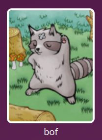
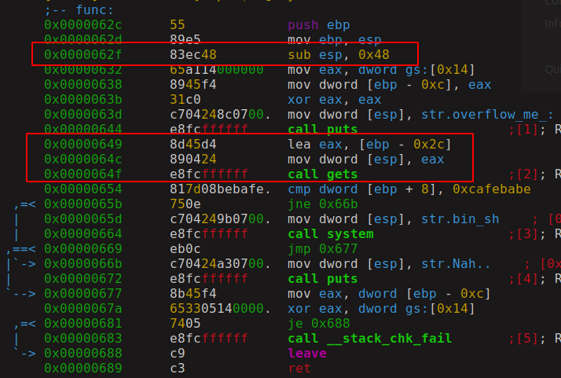
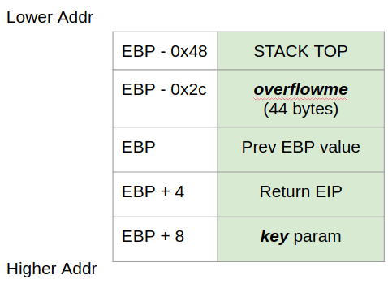
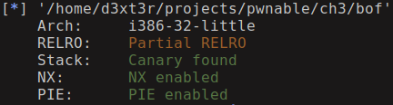

Binary Exploitation [pwnable.kr] - (Level 3) BOF
Challenge Description
| Name | BOF |
| Points | 7 |
| Solves | 12586 times |
| Category | Exploitation |
| Description | Nana told me that buffer overflow is one of the most common software vulnerability. Is that true? |

This challenge is a classic buffer overflow but to interact with the program we have to connect to the remote server, and this simple challenge is a very good example of remote exploitation.
If you don’t know what stack overflow is, I highly recommend you to read the classic paper. This paper also gives you an introduction on how to write an exploit.
In this challenge you won’t be able to do ssh login, you are given a link from where you have to download binary, code file and to solve the challenge you have to connect to the remote socket(on pwnable.kr 9000) and interact with the program. For initial testing, you can do a simple netcat connection and interact with the program.
This is the vulnerable C program.
1 | void func(int key){ |
Hint
The program calls the func function with a hardcoded parameter and in that function, it takes input from the stdin into overflowme buffer which is of 32 bytes. Next, the key parameter which was passed to the func function is compared with 0xcafebabe value and if it is equal you get the shell access from which you can read the flag file.
The question that naturally arises is if the program input is stored into overflowme variable and if it does not affect key param with which comparison is done as the value is hard-coded to (0xdeadbeaf), then how am I suppose to solve this?
Unless if we can! If we can somehow we can change the value of key param to 0xcafebabe while giving input to overflowme variable we can get the shell. The main idea here is to do buffer overflow in overflowme variable when user input is taken by calling the gets function, the target of the overflow is to overwrite the value in key parameter with 0xcafebabe.
Why are we blaming gets function for the overflow? well if you read the gets function documentation it says that function accepts the input until EOF or \0 characters has reached. It does not check if the buffer it is filling is sufficiently large to hold the data thus allowing us to overwrite adjacent memory.
Solution
To overwrite the key param we need to calculate the precise length of input we need to give to gets function, for that, we need to understand the stack layout of the program. To understand what the layout of the stack layout lets first looks at the function disassembly

As you can see in the first highlight function has allocating stack of 0x48 bytes which is much higher than our function needs, right?. While our program just has one variable (overflowme) but compiler also creates some extra space for internal variables which it needs for calling function and to store temporary results, that’s the reason we see allocated size is much higher than what we see in the C code. Let’s look at the stack layout.

overflowme variable is located at 44 bytes above from the start of stack-frame. and key parameter is 8 bytes below EBP and so the key param is 44+8=52 bytes from the overflowme variable. To overwrite the key param you first need to give 52 bytes of junk value and 0xcafebabe value.
One important thing to understand is EBP always points to the start of the stack-frame and ESP points to the end of stack-frame, all the local variables of the function are stored within this limit of the memory. Each function you call get their separate space for stack-frame and they do not overlap what so ever otherwise it will corrupt the process memory leading to program crash.
To interact with the program we will use pwntools python package. Let’s look at the exploit script.
1 | # import everything, its a bad practice but its simple |
Let check what all security mechanisms are present in the binary, for this task pwntools python library can help us. When you install pwntools python package, it also installs the command-line tool called pwn. Many of the library functions which you can invoke from the code are also callable from the command-line, this help in the rapid prototype of ideas.
To do the security check run pwn checksec bof you will see the below output

Stack protection is enabled, then how come we manage to overflow the buffer and not get into trouble? The reason is the stack canary check is done at the end of the function while the code to get the shell is executed before the function ends.
Conclusion
This challenge was a simple program which does a classic buffer overflow but this was a remote version and you don’t have to write any shellcode but this class of attack is called data-only attack whereby changing the data of the program we have redirected the flow of the program. We also created our first exploit program with pwntools.